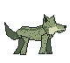
Gray wolf
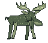
Moose
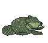
North American beaver
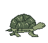
Eastern box turtle
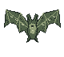
Little brown bat
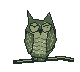
Great horned owl
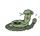
Timber rattlesnake
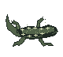
Spotted salamander
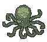
Giant Pacific octopus
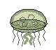
Moon jelly
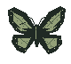
Monarch butterfly
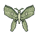
Luna moth
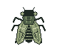
Seventeen-year cicada
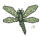
Common green darner
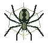
Black-and-yellow garden spider
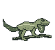
Green anole
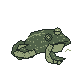
American bullfrog
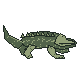
American alligator
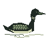
Common loon
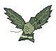
Broad-winged hawk
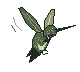
Ruby-throated hummingbird
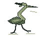
Great blue heron
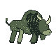
American bison
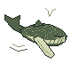
Humpback whale
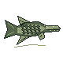
Alligator gar
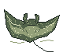
Manta ray
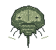
Atlantic horseshoe crab
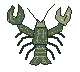
American lobster
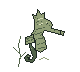
Lined seahorse
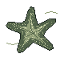
Ochre sea star